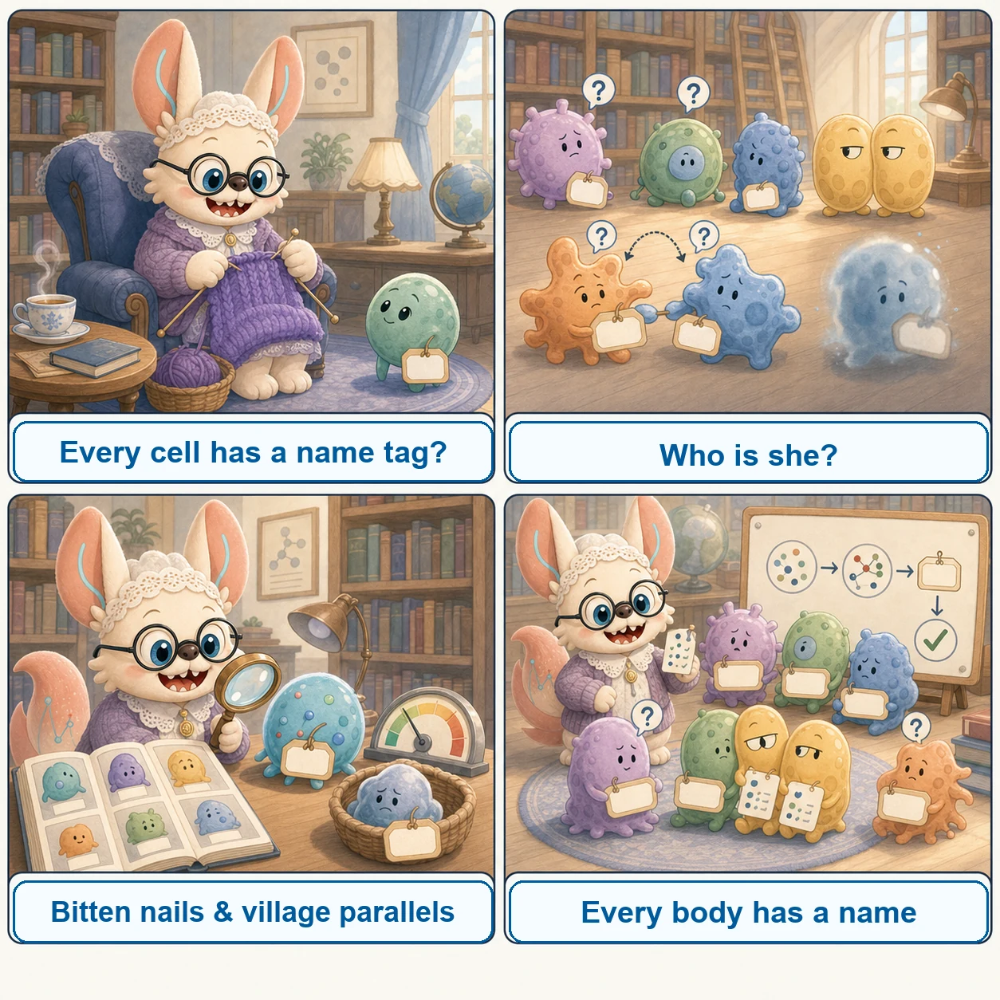
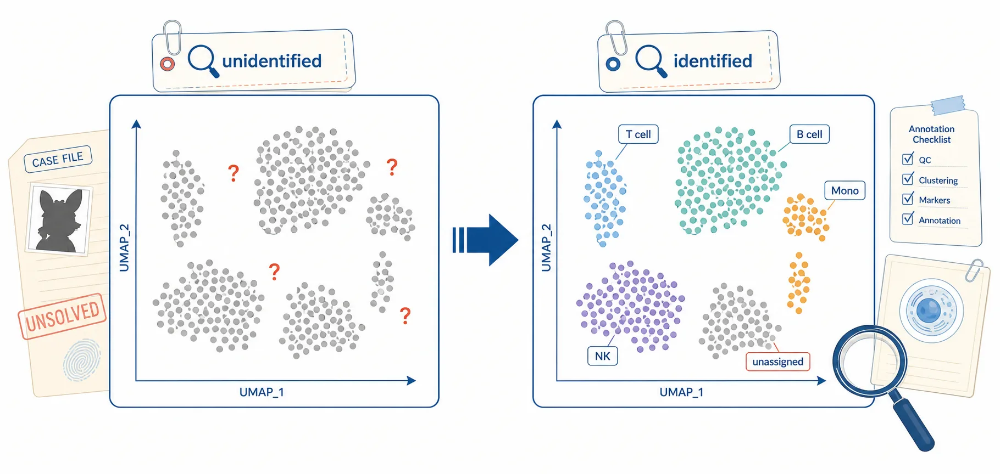
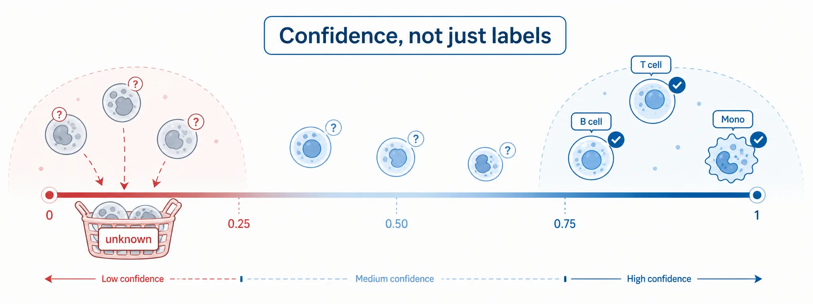
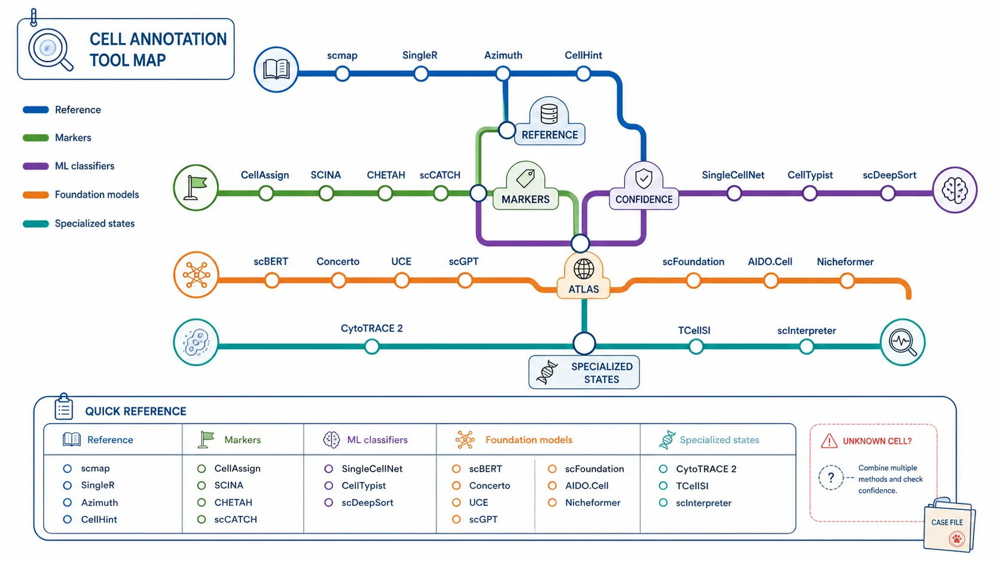

St. Mary Mead logic
When many witnesses are plausible, compare multiple evidence sources: reference labels, marker genes, cluster context, and confidence scores.
A case-file guide to identifying every cellular witness before the model starts reasoning.
Last reviewed: July 2026 · Inclusion: maintained, benchmarked, or widely cited tools · Found an issue? Suggest a fix on GitHub
Agatha Christie's The Body in the Library (1942), re-read as a cell-annotation parable: a nameless young woman is found in the Bantrys' respectable library, and Miss Marple can only give her back a name — by reading small telltale details and village parallels. (Classic-novel spoilers inside.)
The Bantrys find a young woman's body on their library hearthrug. She belongs to no one in the village, and nothing about her announces a name.
The annotation problem. An anonymous expression profile lands in your matrix. Before it can testify — before any downstream analysis — it needs an identity.
Miss Marple doubts the official identification because of the girl's fingernails, her teeth, her clothes. Identity hides in details others dismiss as trivial.
Marker genes. A handful of telltale signals gives a cell away. Markers are the bitten nails of a dataset — small, specific, and easy to overlook.
Miss Marple solves cases by analogy: every stranger resembles someone she has known for decades in her village. Her village is a living reference atlas.
Reference atlases. Azimuth, CellTypist, SingleR and Pan-human Azimuth do the same: match an unknown cell against curated references — "this one looks like a T cell I know".
The body is confidently identified as a missing dancer — and the identification is wrong. The wrong name nearly sends the whole investigation astray.
Misannotation. A confident first label is not the truth. Keep confidence scores visible, and let low-evidence cells stay unknown rather than forcing a name.
Miss Marple listens to all the village gossip — then checks each piece against independent facts before believing any of it.
Validation. Corroborate labels with independent evidence: confidence distributions, marker re-expression, and reference databases (CellMarker 2.0, PanglaoDB, HuBMAP).
By the end, the nameless girl has her real name back — and every step of the identification can be retraced, clue by clue.
The annotated matrix. The goal is not just labels, but labels with provenance: type, confidence, and the evidence chain that earned them.

In St. Mary Mead, nobody is anonymous. That is the whole point of annotation: there are no anonymous cells — only cells whose evidence you have not read yet.
Cell annotation assigns biological identities (cell types, states) to individual cells based on their transcriptomic profiles. This page provides a comprehensive guide to available tools, helping you choose the right method for your analysis.

When many witnesses are plausible, compare multiple evidence sources: reference labels, marker genes, cluster context, and confidence scores.
A strong marker pattern can be a clue, but the method still has to test whether it is biology, batch structure, or an annotation artifact.
Good annotation is often elimination: reject impossible labels, keep uncertainty visible, then validate the final identity with independent evidence.
QC & normalize
Based on data & needs
Run classification
Check markers


| Tool | Approach | Best For |
|---|---|---|
| scmap | Projection to reference | Fast large-scale annotation |
| SingleR | Correlation-based | Bulk reference compatibility |
| CellAssign | Probabilistic marker-based | Multi-batch studies with markers |
| SCINA | Semi-supervised mixture | Simple marker-based |
| SingleCellNet | Random forest | Cross-platform robustness |
| CHETAH | Hierarchical tree | Uncertain/intermediate cells |
| CellTypist | Logistic regression | Immune cell typing |
| Azimuth | Reference mapping (Seurat) | Seurat ecosystem users |
| Pan-human Azimuth | Supervised NN, organism-scale typology | Organism-wide reference mapping |
| scGPT | Foundation model (Transformer) | Multi-task learning |
| scFoundation | Foundation model (100M params) | Low-depth data enhancement |
| CytoTRACE 2 | Interpretable deep learning | Developmental potential |
| scCATCH | Cluster-based + database | Automatic cluster annotation |
| scDeepSort | Pre-trained GNN | Reference-free annotation |
| scBERT | BERT-based transformer | Deep learning annotation |
| Concerto | Contrastive learning | Million-scale mapping |
| CellHint | Harmonization (PCT) | Cross-dataset standardization |
| UCE | Universal embeddings | Zero-shot cross-species |
| scInterpreter | LLM-based (Llama) | Gene knowledge integration |
| TCellSI | T cell state scoring | 8 T cell functional states |
| AIDO.Cell | Full-transcriptome transformer | 19K gene context |
| Nicheformer | Spatial + dissociated FM | Spatial context prediction |
Map query cells to pre-annotated reference datasets
RunAzimuth() provides multi-resolution labels (l1, l2) with confidence scores. Supports ATAC-seq via bridge integration.
Leverage prior knowledge of cell type marker genes
Traditional ML approaches for supervised classification
Large-scale pre-trained models for general single-cell analysis
Methods for predicting cell potency and developmental states
The walkthrough below takes a QC'd AnnData object and gives every cell a name, end to end: normalize to the exact scale CellTypist expects, run a pretrained immune model with majority voting over Leiden clusters, keep the per-cell probability as a confidence score, cross-examine the labels against a hand-picked marker panel, and leave low-evidence cells honestly marked Unknown. Everything is computational and retrospective — the only evidence used is the count matrix you already have.
CellTypist is a light logistic-regression classifier and installs cleanly alongside Scanpy. leidenalg supplies the over-clustering used for majority voting; decoupler is optional but convenient for signature-based marker scoring. Keep an R environment on hand only if you want the SingleR cross-check.
# conda / mamba recommended
conda create -n scannot python=3.10 -y
conda activate scannot
pip install scanpy celltypist leidenalg
pip install decoupler # optional: signature / marker scoring
# optional R cross-check with SingleR
# R: BiocManager::install(c("SingleR", "celldex", "SingleCellExperiment"))Hardware. CellTypist inference is CPU-only and fast: a 50k-cell dataset annotates in under a minute on a laptop, and 500k cells fit comfortably on a 32–64 GB compute node. Only the foundation-model route (scGPT, UCE, scFoundation fine-tuning) needs a GPU; reference mapping with Azimuth or scArches sits in between.
AnnData (input) — must carry log1p-normalized expression in adata.X; stash the raw integers in adata.layers["counts"] before normalizing so differential expression and doublet tools can still reach them.pkl) — a pickled logistic-regression classifier plus its label set; downloaded once into ~/.celltypist/data/models/. Immune_All_Low.pkl covers fine-grained immune subtypes, Immune_All_High.pkl the coarse onesAnnotationResult — returned by celltypist.annotate(), with .predicted_labels (a DataFrame holding predicted_labels, over_clustering, majority_voting), .probability_matrix (cells × labels), and .decision_matrix (raw decision scores)result.to_adata(): adata.obs["predicted_labels"], adata.obs["majority_voting"], adata.obs["conf_score"]dict of {"cell type": [genes]} fed to sc.pl.dotplot(); the orthogonal evidence you judge the classifier againstadata.write_h5ad(); for the R/SingleR route export counts + obs to a SingleCellExperiment or via zellkonverter::readH5AD()Load a QC-filtered object, normalize to exactly 10,000 counts per cell and log1p-transform, build a Leiden over-clustering, run CellTypist with majority_voting=True, record per-cell confidence, demote low-confidence cells to Unknown, and cross-check the result with a marker dot plot.
import scanpy as sc
import numpy as np
import celltypist
from celltypist import models
# 1. Load the QC'd object (post filtering / doublet removal, raw counts in X)
adata = sc.read_h5ad("adata_qc.h5ad")
adata.layers["counts"] = adata.X.copy() # keep integers for later DE
# 2. NORMALIZATION CONTRACT — the classic CellTypist mistake.
# CellTypist models were trained on expression normalized to exactly
# 10,000 counts per cell and then log1p-transformed. target_sum=1e4 is
# NOT optional: use 1e6 (CPM), SCTransform residuals, or scaled/z-scored
# values and the probabilities are silently wrong, not an error.
sc.pp.normalize_total(adata, target_sum=1e4)
sc.pp.log1p(adata)
adata.raw = adata # log-normalized snapshot
# 3. Over-clustering for majority voting. CellTypist can compute its own,
# but reusing your analysis Leiden keeps labels consistent with the UMAP
# you will actually show. Slightly over-cluster (higher resolution).
sc.pp.highly_variable_genes(adata, n_top_genes=2000, batch_key=None)
sc.pp.pca(adata, n_comps=50, mask_var="highly_variable")
sc.pp.neighbors(adata, n_neighbors=15)
sc.tl.leiden(adata, resolution=1.5, key_added="leiden", flavor="igraph",
n_iterations=2, directed=False)
sc.tl.umap(adata)
# 4. Download and load a pretrained model. Immune_All_Low = fine-grained
# immune subtypes; Immune_All_High = coarse lineages. Pick the resolution
# your tissue actually supports.
models.download_models(model=["Immune_All_Low.pkl"])
model = models.Model.load(model="Immune_All_Low.pkl")
print(model.cell_types[:10], "...", len(model.cell_types), "labels")
# 5. Annotate. majority_voting=True refines per-cell calls by taking the
# dominant label within each over-clustering group -- it removes salt-and-
# pepper noise but can erase genuinely rare populations (see pitfalls).
predictions = celltypist.annotate(
adata,
model=model,
majority_voting=True,
over_clustering="leiden",
)
# 6. Per-cell confidence = max class probability. Keep it visible; it is the
# only honest signal that a cell was a coin flip between two labels.
prob = predictions.probability_matrix
adata.obs["predicted_labels"] = predictions.predicted_labels["predicted_labels"].values
adata.obs["majority_voting"] = predictions.predicted_labels["majority_voting"].values
adata.obs["conf_score"] = prob.max(axis=1).values
adata.obs["runner_up"] = prob.apply(
lambda r: r.sort_values(ascending=False).index[1], axis=1
).values
# 7. Do NOT force a name on weak evidence. Demote low-probability cells to
# "Unknown" rather than letting the argmax invent an identity.
LOW_CONF = 0.5
adata.obs["cell_type"] = adata.obs["majority_voting"].astype(str)
adata.obs.loc[adata.obs["conf_score"] < LOW_CONF, "cell_type"] = "Unknown"
n_unknown = (adata.obs["cell_type"] == "Unknown").sum()
print(f"Unknown (conf < {LOW_CONF}): {n_unknown} / {adata.n_obs} cells")
print(adata.obs["cell_type"].value_counts().head(20))
# 8. ORTHOGONAL CROSS-EXAMINATION. A classifier label is a hypothesis; a
# canonical marker panel is the independent witness. Every called type
# should light up its own markers and stay dark elsewhere.
markers = {
"T cell": ["CD3D", "CD3E", "TRAC"],
"CD8 T": ["CD8A", "CD8B", "GZMK"],
"CD4 T": ["IL7R", "CCR7", "CD40LG"],
"NK": ["NKG7", "GNLY", "KLRD1"],
"B cell": ["MS4A1", "CD79A", "CD79B"],
"Plasma": ["JCHAIN", "MZB1", "XBP1"],
"Monocyte": ["LYZ", "CD14", "FCN1"],
"cDC": ["FCER1A", "CD1C", "CLEC9A"],
"Platelet": ["PPBP", "PF4", "ITGA2B"],
}
markers = {k: [g for g in v if g in adata.var_names] for k, v in markers.items()}
sc.pl.dotplot(adata, markers, groupby="cell_type",
standard_scale="var", dendrogram=True)
sc.pl.umap(adata, color=["cell_type", "conf_score"], legend_loc="on data")
# 9. Quantify agreement between the two lines of evidence: score each cell
# for each marker panel and check the argmax against the classifier.
for ct, genes in markers.items():
sc.tl.score_genes(adata, genes, score_name=f"score_{ct}")
scores = adata.obs[[f"score_{ct}" for ct in markers]]
adata.obs["marker_call"] = (
scores.idxmax(axis=1).str.replace("score_", "", regex=False)
)
print(sc.metrics.confusion_matrix("cell_type", "marker_call", adata.obs))
# 10. Save. Store the full probability matrix so downstream reviewers can
# re-threshold without re-running the classifier.
adata.obsm["celltypist_prob"] = prob.reindex(adata.obs_names).values
adata.uns["celltypist_labels"] = list(prob.columns)
adata.write_h5ad("adata_annotated.h5ad")
print("Saved adata_annotated.h5ad")Fallback routes. If no CellTypist model fits your tissue, two alternatives use the same annotated object. SingleR (R) correlates each cell against a bulk or single-cell reference and reports a per-cell delta score, so it flags weak assignments explicitly:
# R -- SingleR cross-check on the same log-normalized matrix
library(SingleR); library(celldex); library(zellkonverter)
sce <- readH5AD("adata_annotated.h5ad") # X = log-normalized
assayNames(sce) <- "logcounts"
ref <- celldex::HumanPrimaryCellAtlasData() # or MonacoImmuneData()
pred <- SingleR(test = sce, ref = ref, labels = ref$label.fine,
de.method = "wilcox")
table(pred$pruned.labels, useNA = "ifany") # NA = pruned, low confidence
plotDeltaDistribution(pred) # per-cell assignment marginOr take the reference-mapping route — Azimuth (Seurat) or scArches/scANVI — which projects your query into a curated atlas embedding and transfers labels with a mapping score. That route handles batch effects between query and reference far better than a plain classifier, at the cost of needing a well-matched atlas.
sc.pp.normalize_total(adata, target_sum=1e4) followed by sc.pp.log1p(). Feeding CPM (1e6), raw counts, scaled/z-scored values, or SCTransform residuals produces confidently wrong labels with no warning — the model still returns probabilities, they are just meaningless. Check np.expm1(adata.X[:5]).sum(1) ≈ 10,000 before you trust anything.predicted_labels column beside majority_voting, and over-cluster (Leiden resolution 1.5–2.0) so rare types get their own group before voting.Immune_All_Low on brain tissue will call microglia something in its immune vocabulary; a gut atlas will not describe kidney. Match the reference to the tissue and the assay (10x vs Smart-seq2 differ in gene detection), and prefer the coarse model when the fine one has no vocabulary for your sample.CD3D and abundant LYZ is a misannotation regardless of how high the probability is. Disagreement between the two is the signal worth investigating, not a nuisance.Unknown is honest and downstream-safe; a forced label propagates into every DE test, composition comparison, and figure that follows.adata.layers["counts"]. Annotation needs the normalized matrix, but differential expression, pseudobulk, and doublet re-checks need counts — losing them means re-running the pipeline from the start.